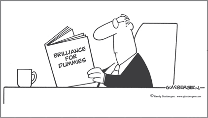

CHAPTER 6
Getting More Satisfaction from Work: Why “Smart” Is Relative

CHAPTER HIGHLIGHTS
 Since our perception is influenced by our thinking preferences, just having good eyesight and hearing doesn’t guarantee that you actually hear and understand what is intended.
Since our perception is influenced by our thinking preferences, just having good eyesight and hearing doesn’t guarantee that you actually hear and understand what is intended.
 Intellectual smartness is only one kind of intelligence; different kinds of intelligence can be mapped against the four quadrants.
Intellectual smartness is only one kind of intelligence; different kinds of intelligence can be mapped against the four quadrants.
 Different occupations have unique mental requirements, which result in specific occupational norms.
Different occupations have unique mental requirements, which result in specific occupational norms.
 The more aligned the worker is with the work, the more satisfying and fulfilling the work will be.
The more aligned the worker is with the work, the more satisfying and fulfilling the work will be.
As a student at Cornell, I noticed that the engineering students had crew cuts, carried slide rules, and talked in technical terms. They wore mostly sweaters and windbreakers. Meanwhile, across the quadrangle, students in the Arts and Sciences College had longer hair, wore sports jackets with leather patches on the elbows, and talked about literature and economics. There were many more women on that side of the campus. The music department was even more obviously different. Here there were also more women than men. The clothes were loose and comfortable and often colorful. The students lounged around and sang or listened to music, and the buildings were converted Victorian houses. There were ivy-covered buildings on the arts quadrangle and steel, concrete, and glass buildings in the engineering area.
Those early observations, made so long ago, continue to hold true today. Our thinking preferences continue to be a consistent basis for human behavior and provide clues about how different we are. Hardly a day goes by when there isn’t an excellent example of preference evident in the behavior of characters on television, in the movies, or, better yet, in real life.
A Company Chairman and President Discover Their Differences
The sponsor of my management presentation in Seattle some years ago invited me to have breakfast with the chairman and the president of a local company that was important to him. During a lively breakfast conversation, I could see that these two men had sharply different views on any given topic, and their nonverbal reactions provided exclamation points to their words. Their eyes flashed as they interjected opposing views.
These two men, along with the 100 others who attended the meeting, had completed the HBDI Assessment prior to the session and, unbeknownst to them, had been assigned seats based on their profiles. In fact, the first tables in each of the four rows were small groups representing the extremes in each quadrant and therefore served as demonstration tables for my workshop (see Figure 6-1). I knew what the chairman and president did not: that they had opposing profiles and had been assigned to the A- and D-quadrant demonstration tables.
FIGURE 6-1 Typical layout for a presentation where groups of participants are seated according to their thinking preferences, based on their HBDI Profile results. (Room layout of tables organized by quadrant preferences.)
I excused myself from breakfast early in order to get ready for the presentation, and therefore I was in a position to observe these two men as they entered the room and were directed to the opposite front-row tables. I watched as they proceeded to their tables and, before sitting down, looked at each other and conveyed by their expressions some understanding of what was going to happen. They had been at each other’s throats for 15 years, and maybe they were about to find out why.
Early in my presentation, I conducted an exercise in which individuals revealed their work preferences, similar to the exercises in Chapter 3. At each of the 28 tables were seated three participants with very similar profiles, although each table had a different tilt. As the individuals determined their work preferences and then shared them with others at the same table, they discovered that these were highly homogeneous groups. I then had the four front-row demonstration tables reveal to the entire audience what work they really loved and were energized by.
As it turned out, the chairman and the president were the spokesmen for their respective tables. The president, who was also the chief operating officer, represented the logical, rational, analytic A-quadrant table. The chairman, who was the founder and CEO, represented the holistic, intuitive, risk-taking D-quadrant table (see Figure 6-2). As each of the two made his diametrically opposite comments, they were looking at each other, and I had the distinct feeling that the source of their 15 years of arguments and differences of opinion and frustration was being revealed.
FIGURE 6-2 HBDI Profiles of two corporate officers: the president/COO and the chairman/CEO.
After the session ended, they approached me and admitted that they now knew they had really missed the boat. They had not taken advantage of their differences of opinion in terms of getting more viable or creative alternatives, but rather had frustrated each other for almost their entire relationship. They had both been adding value, but they could have been very much more effective as CEO and COO if they had taken advantage of their mental diversity. For me, and for the workshop participants, it was a memorable public demonstration of the consequences of our thinking preferences in a work setting. For the two men, it was the beginning of a true partnership.
What Our Senses Miss
Most of us who have reasonably good eyesight would assume that we are seeing the world the way it really is. If our hearing is as good as our eyesight, we are also convinced that we hear everything the way it is intended to be heard. In fact, our senses aren’t always so accurate. It is much more likely that what we are seeing and hearing is based upon our perceptions, which are biased by our thinking preferences.
How many of us have wondered about a course we took, a job, a relationship, or an event that didn’t turn out the way we wanted it to because we just didn’t seem to “get it”? We’ve overheard numerous people say, after understanding their thinking preferences, “Oh! I see. Now I understand why I flunked algebra.” Or one married partner, upon seeing the couple’s very different HBDI profiles plotted together, will say, “Oh! You think differently from me. Gee, I thought you were doing that on purpose just to irritate me!” Or a parent writes in and says, “It’s amazing. Now I get it. My son is not weird. He’s just different. So very different from me.”
In fact, we are all unique, and that is why each of us is different—and normal just the way we are. The “aha moments” that happen during this discovery process are a frequent outcome of understanding your thinking preferences by means of the four-quadrant metaphor.
We’re designed to take it all in, but we don’t really, and then we’re surprised when others don’t “get us” or align with our thinking. In fact, the first step in your ability to appreciate difference is having an understanding of your own gaps, because then you will have context for understanding why a different perspective is so important.
And as we’ll explore in this chapter, there are also important implications for work alignment and dealing with misalignment.
Relative Smartness
Henry Mintzberg, PhD,1 an expert on management and a professor at McGill University, wrote a classic article in the Harvard Business Review in which he raised several questions. The first of them was, “How can some people be so smart and dull at the same time? How can they be so capable of certain mental activities and at the same time be so incapable of others?”
When I read the article, I remember saying to myself, “My God, I think he’s talking about me … but he’s also talking about my staff, my boss, my family, and all my friends.” Although all of these people were successful in what they did, not one of them was equally “smart” across the entire brain spectrum. We were all smart and dull at the same time. He was talking about everyone!
I believe thinking preferences provide the answer to Dr. Mintzberg’s questions. We have established preferences in our thinking, which in turn lead to interests that, when pursued, can establish competencies in that discrete domain of thinking, while at the same time a neighboring domain remains relatively dull. For example, an individual whose preferences and interests lead to comprehension and ability in algebra, which is linear processing, may be relatively incapable of understanding solid geometry, which is visual and spatially oriented. This example illustrates how two forms of math can involve two completely different methods or thought processes. This is true of other disciplines as well—chemistry versus physics, painting versus sculpture, bookkeeping versus financial analysis. The reason is that these are two separate mental activities in which a person can have highly varying competencies.
Look at the model of “smarts” in Figure 6-3 and find those areas where you either excel or fall short.
FIGURE 6-3 Types of “smarts” across the four quadrants.
Note that “intellectual smarts” falls into one quadrant while other types of smarts, such as “street smarts” and “emotional intelligence,” fall into completely different quadrants. Intellectual smarts is the category that IQ attempts to measure, but as we are gradually realizing, there are ways of being smart that go beyond just the intelligence factors measured by IQ tests. One of the important researchers in this area, Harvard professor Howard Gardner,2 describes this as the theory of multiple intelligences. According to Gardner:
The theory is a critique of the standard psychological view of intellect: that there is a single intelligence, adequately measured by IQ or other short-answer tests. Instead, on the basis of evidence from disparate sources, I claim that human beings have a number of relatively discrete intellectual capacities. IQ tests assess linguistic and logical-mathematical intelligence, and sometimes spatial intelligence…. But humans have several other significant intellectual capacities.
He goes on to describe musical intelligence, bodily-kinesthetic intelligence, interpersonal (social) intelligence, intrapersonal intelligence (understanding of self), naturalist intelligence, and others. Although somewhat different in design from the concept of Whole Brain Thinking, Gardner’s research and that of others, including Daniel Goleman’s3 work on emotional, social, and ecological intelligence, is helpful in understanding that these different kinds of intelligence make up, as Gardner puts it, “the human intellectual toolkit.”
To Appreciate “Smarts,” You Have to Understand Differences
Your assumptions about what is smart and what is dumb are the result of your preferences, but in reality, every quadrant has something to contribute. If you don’t get the idea of relative intelligence—that there are different ways of being smart—then you won’t be able to recognize why you should respect the ideas of others.
For example, many organized, traditional businesses often hire on the basis of intellectual smarts, whereas independent, informal businesses frequently thrive on the kinds of smarts that fall into other quadrants. If organized business had a good way of hiring and applying all the different intelligences, the chances are high that those companies would be more successful. But people with the other kinds of smarts appear to be dumb when they are scrutinized through the bureaucratic filters of the typical business hiring process. This is exacerbated by the keyword approach used by many organizations to sort résumés.
Often, what we consider “not smart” is really just a huge blind spot created by our preferences. My classic example of this involves a friend who confessed that he didn’t understand his son John and had given up trying to parent him. He was frustrated by John’s behavior, didn’t like John’s friends, was embarrassed by the way John dressed, and was depressed about John’s poor performance in school and his apparent lack of any career direction. He further stated that it wasn’t just him—the entire family reacted about the same way. They thought John was weird, and they just didn’t get him.
My friend, who was very familiar with my work, asked if I could administer HBDI Profiles to his entire family. First, I processed the individual assessments for each of them. Then, to compare the shape of each family member’s profile to those of the others, I generated a composite of the entire family member’s profiles together (see Figure 6-4).
FIGURE 6-4 HBDI composite profile of a family with one member falling outside of the predominant mental preferences of the family culture.
The composite revealed quite dramatically that John’s thinking preferences were the exact opposite of those of the rest of his family members. The contrast of the predominant “smartness and dullness” of the family with John’s was dramatically apparent to everyone. My friend finally realized that John wasn’t abnormal, stupid, or a problem child; he was simply different from the rest of his family. As a matter of fact, from John’s perspective, it was his family that was weird, not him.
When he saw the profiles, the father said, “Oh, my God, what have I done?” At that point, he realized that he had been critical of John for not having the same interests or talents as the rest of the family. When the family gathered around the kitchen table, looking at each other’s profiles, one of John’s brothers looked at him as if he were meeting John for the first time.
A year or so after this incident, John married his girlfriend, of whom the family had approved throughout their relationship. Guess what? The bride’s profile matched the rest of the family’s average profile, and thus a new cycle of understanding differences was started, which is a requirement in all types of relationships if they are to avoid misunderstandings and be successful.
Signs of Preference in the Workplace
I encourage you to seek out examples of thinking preferences in action in your own workplace. Take a break, wander around the office area, and notice the differences in the different workspaces. As you do so, think about the individual who owns each workspace and assess the degree of alignment between how that workspace looks and the everyday behavior of its occupant (see Figure 6-6). Chances are, clues abound!
FIGURE 6-6 Alignment between workspace and occupant’s behavior. The picture on the left depicts a staff member with a very loose, unstructured work style. The one on the right illustrates someone who prefers working at a clean, orderly desk.
For example, here is Mary’s desk, and it’s neat as a pin. Mary is the administrative assistant who prides herself on being highly organized and punctual. She is fastidious in her dress and appearance. Her workspace is just outside Bill’s office, which is covered in paper. The surface of his desk is not visible. The windowsill has become a bookcase, and the guest chair is stacked with reports, as is the top of the filing cabinet. Mary tries to keep Bill’s desk neat and orderly, but Bill complains about his papers being somewhere other than where he put them, so she has given up on trying to categorize his work logically. Mary cannot tolerate her desk being messy, whereas Bill is far more interested in the project he is working on than in how his office appears. Regardless of what others think, though, Bill has his own system that works for him.
Both Mary and Bill are very good at what they do, but it’s clear that their preferences influence their priorities. The HBDI Profiles of Mary and Bill are in good alignment with the appearance of their workspaces. Mary’s profile has a strong lower left B-quadrant preference. Her need for order and to work only on the project on her desk is quite visible. In contrast, Bill’s profile is heading in the opposite direction, toward the upper right D quadrant. Bill works on several projects at a time, and therefore needs to have all his materials out in front of him. He has no need to clean off his desk at the end of the day.
If you venture into the finance area, you will see that a high percentage of the desks are neat and orderly, even though there are some papers and reports on most of them. If you look closely at the papers, you will see neatly organized spreadsheets and reports, and if there are any notes, the writing is typically quite legible, with small, precisely formed letters and numbers. The need for unquestionable accuracy in this area of the company is obvious in the work styles of the staff members.
Whenever you encounter an office or cubicle with lots of paper “stuff” on the desks and numerous surfaces, it probably belongs to someone whose job requires simultaneity, creative thinking, and a nonstructured environment. Cleaning up and being neat is less important than addressing the task at hand. Sometimes, cleaning up gets in the way of such people’s work because it doesn’t come easy to them. They are working just as hard, but differently.
There is a lot of common sense involved in these clues to thinking preference. It is rare to find a major discontinuity between a person’s workspace and his or her thinking preference profile unless he or she is working in an environment where a clean desk is mandated. This is true not only of individuals but of functions such as finance, sales, marketing, R&D, legal, advertising, engineering, manufacturing, and human resources. And this is where we start to see implications in terms of how well someone is aligned with the work he or she performs and, in turn, the person’s overall level of work satisfaction.
Occupational Norms
There is a strong relationship between our preferences and the kind of work that energizes us—the work that we love. In this section, I will report on the distribution of high-frequency occupational profiles of general interest.
In looking over our HBDI Profile database and analyzing occupational choices, it became clear that there are norms involving mental preference and occupational choice. For example, the engineering profession (see Figure 6-7) has a distinct tilt toward the A quadrant. The degree of tilt is determined by the type of engineering; chemical engineering is the most strongly A-quadrant-preferred occupation within the broad engineering profession.
FIGURE 6-7 A continuum of engineering profiles. HBDI profile norms for the nine types of engineers, displayed in a continuum from most A-quadrant to most B-, C-, and then D-quadrant preferences.
The finance profession (see Figure 6-8) also has a strong A-quadrant tilt, and the actuarial occupation is the most strongly A-quadrant-oriented within the finance function.
FIGURE 6-8 A continuum of HBDI profiles of financial positions.
Business managers (or general managers) as a whole represent a multidominant occupation for both males and females (see Figure 6-9). This is probably because the work requires that breadth of thinking.
FIGURE 6-9 Averages of business managers’ HBDI profiles, showing differences between males and females.
Foremen in the manufacturing function have a strong B-quadrant preference, as do finance clerks, bank tellers, and record keepers (see Figure 6-10).
FIGURE 6-10 Example of HBDI profiles of B-quadrant professionals.
Moving next to double-dominant lower (B/C) profiles, we have administrative assistants as the most common occupation preferring this duality. General office clerks are also in this group. Homemakers often share this strong dual B- and C-quadrant preference (see Figure 6-11).
FIGURE 6-11 Examples of HBDI profiles of typically lower-mode (B- and C-quadrant) professionals.
The database norms clearly identify the nursing profession as a very C-quadrant-oriented occupational group (except supervisory nurses, who are double-dominant B/C). Social workers, professional volunteers, and teachers share in this preference, particularly elementary school teachers and school counselors (see Figure 6-12).
FIGURE 6-12 Examples of HBDI profiles of C-quadrant professionals.
As we continue in a counterclockwise manner to identify occupational preferences, we come to the double-dominant C/D-quadrant right mode. Here we have many ministers, counselors, psychologists, and social workers (see Figure 6-13).
FIGURE 6-13 Examples of HBDI profiles of right-mode (C-and D-quadrant) professionals.
In the D quadrant, there are artists, graphic and interior designers, art directors, and entrepreneurs (see Figure 6-14).
FIGURE 6-14 Examples of HBDI profiles of D-quadrant professionals.
Among those with the double-dominant upper (A/D) profile, we find scientific occupations, such as research and development, and particularly members of the physics profession (see Figure 6-15).
FIGURE 6-15 Examples of HBDI profiles of upper-mode (A- and D-quadrant) professionals.
This brings us to the multi-dominant profiles with three or even four primaries (see Figure 6-16). Chief executive officer is a prominent occupational category. (For more on the CEO data, see Chapter 20.) Other four-quadrant occupations include project coordinators, directors, and managers of customer service. The number of occupations is small, since only 3 percent of the total database is quadruple-dominant profiles.
FIGURE 6-16 Examples of professionals with preferences in all four quadrants: A, B, C, and D (1-1-1-1 HBDI Profile).
Alignment Leads to Greater Satisfaction
It’s important to recognize that part of the occupational norm data in the database is influenced by people who occupy positions that are not in strong alignment with their preferences. Therefore, there will be engineers who don’t share the A-quadrant-oriented norm, but are still survivors in the engineering profession. And there will be graphic artists who don’t share the general strong D-quadrant preference. However, our experience in working with these people is clear: those who engage in this occupation work differently from those who constitute the typical norm, those who are in strong alignment with the mentality of the work.
It is also clear that those who are not in alignment with the job norm typically have a significantly lower level of satisfaction and fulfillment in performing the work. In many cases, they are individuals who are trapped in work that is not entirely suited to them, but since they can perform that work with reasonably satisfactory results, they continue to occupy that position and receive the economic rewards—even though it is not the ideal work for them to do (unless, of course, they took on the assignment exclusively for learning and stretch and then failed to move on).
Generally speaking, when we look at the database, we find that the highest satisfaction comes from those who have a strong alignment between their mental preferences and the mentality of the work that they are assigned to do, and the corollary is also true. The lowest satisfactions come from those who are misaligned, unless they are intentionally looking for stretch and challenge in that specific assignment. The conclusion is obvious: the best of all worlds, from the perspective of both the company and the employee, is to have the highest degree of alignment possible between the worker and the work.
In the final analysis, work should be satisfying and fulfilling. It’s never too late to make the necessary career changes to achieve that end.
SO WHAT?
 The closer the alignment between an individual’s mental preference and the mental requirements of the job, the more likely it is that the individual will achieve job success and satisfaction.
The closer the alignment between an individual’s mental preference and the mental requirements of the job, the more likely it is that the individual will achieve job success and satisfaction.
 Nonalignment of job candidates with those occupational norms will significantly reduce the likelihood of the candidates achieving full job satisfaction and fulfillment, unless the individual is looking for a mental challenge.
Nonalignment of job candidates with those occupational norms will significantly reduce the likelihood of the candidates achieving full job satisfaction and fulfillment, unless the individual is looking for a mental challenge.
 The best of all worlds for the company and the employee is to have the closest alignment that can be achieved between the worker and the work.
The best of all worlds for the company and the employee is to have the closest alignment that can be achieved between the worker and the work.